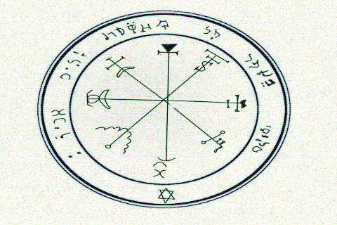

About Sigma
The method behind the madness
Why should we reconsider input methods, how is the sigma project doing this and why is this presented as a game?
The systems are designed along the lines of tried and true mathematical concepts. Leveraging these can potentially revolutionize text entry.
Why, should we do this you ask? Well simply because with the VR revolution around the corner, carrying around a keyboard in your escape from reality would totally break the imersivness of the experience.
Background
In the infancy of computer history, an user was supposed never to move his right hand back and forth between the mouse and the keyboard. Rather the hands are resting where they should, just as when you play an FPS. Why can't we use computers daily like this and how does it work with only five keys?
[1]The chorded keyboard works by having several keys which might be pressed simultanously. By pressing keys simultanously, we can have about 32 different input signals. Think of it as when you are playing guitar, hence "chorded" keyboard.
You'll quickly realize that it's just to much of a hazzle to task a rookie computer user to learn all these chords. No matter how elegant the design might be most people simply won't put in the effort.
Our solution
By placing the symbols of the current alphabet on screen at all times along with the keystrokes to get there. We get around the immense learning curve from having to memorize hundreds of strokes
Even though most of you have the key positions memorized. This efficiency is broken as soon as soon as you are tasked to write in a foreign language.
Statistical background
Every symbol is not as frequent. Therefore we can make tradeoffs with the difficulty of writing certain keys. The idea behind the treeboard is exactly this.
[2]As a matter of fact this is the very foundation behind modern compression, since most symbols are so rare you can replace them with longer strokes and still gain a net compression in data transmission
[3]
Combined with highlighting of probable symbols, this leads to a low barrier entry to foreign text input. The first 12 keys are quite easy to remember and represents statistically the majority of the symbols. Z in the english language for example have an probability of 0.07%, i.e. not even one in hundred letters is an z. As such it doesn't matter in the greater scheme of things if there's an slight delay when entering this symbol.
Universal input
The keyboard can easily be adapted to different languages. Currently you can play the illiads in greek or the wuthering heights in English. However to adopt it to different language is a breeze.
Obviously this is not limited to human languages, the system can also be adapted to say mathematical systems succesfully.
roosevelt math boardWhy a silly game?
Why is this project implemented as such a silly game, you might ask? Well, first of all it takes a rather silly individual to try to tackle text input at a fundamental level like this. Secondly, the intended audience have trained so intensivly and for such a long time that the only way to see if this system measures up is to gather statistics by motivated individuals.
When measuring the efficiency of the different variants, one has to keep in mind that the status quo has been so extensivly used. To gather data on whether any of these alternative designs might work a lot of training has to be done upon them as well.
As to try to make up for this lack of testing time, the ideal form seemed to be a game. As such you can help out in the quest for knowledge simply by playing!